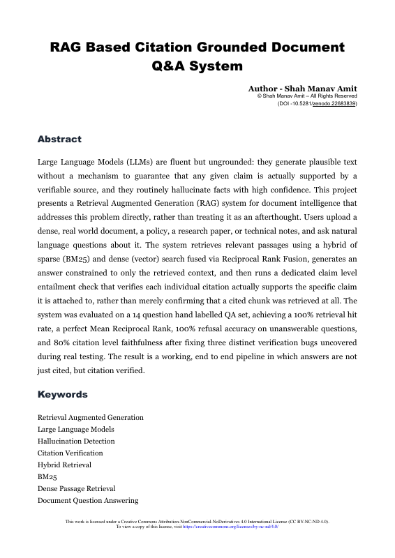
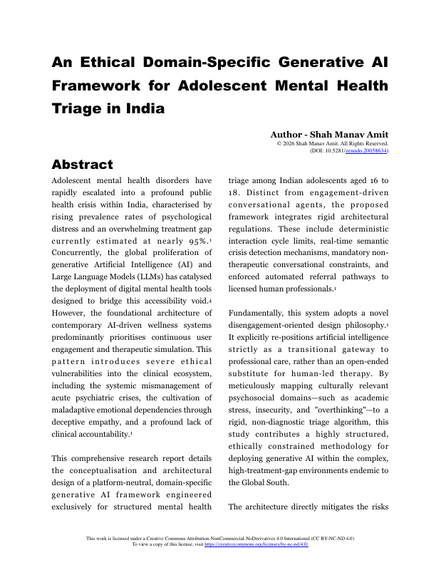
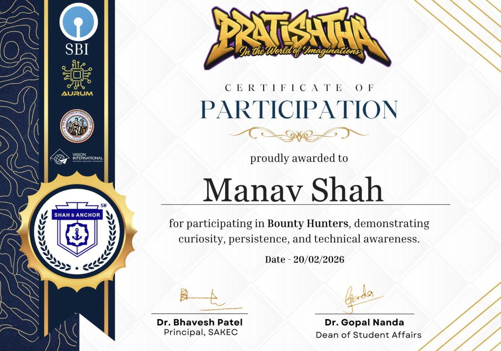
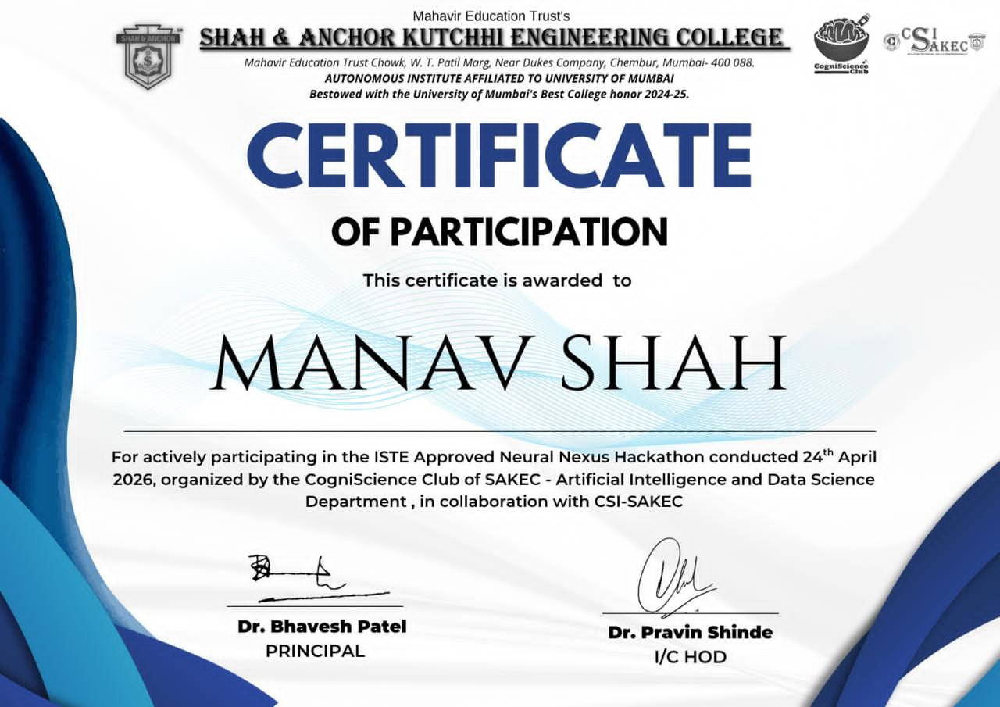

01 / CORE
Programming &
software development
C++ · Python · JavaWeb applications, Python desktop tools, and working APIs. From a requirement to a runnable build.
Explore the builds ↗Second-year student. Hands-on builder.
Algorithms on paper.
Ideas out in the world.
I study AI & Data Science at Shah & Anchor Kutchhi Engineering College. My projects take me from ambulance-routing algorithms to AI answers that can show their sources.
Currently sharpening DSA & competitive programming.
TCS Hackathon · Top 5 finalist team out of 60 ↗
A growing technical foundation, sharpened through
coursework, practice, and complete projects.
Web applications, Python desktop tools, and working APIs. From a requirement to a runnable build.
Explore the builds ↗Ongoing LeetCode and competitive-programming practice. Applied in S.A.V.E. with graph routing and custom data structures.
See algorithms in action ↗Hybrid retrieval, citation checks, and predictive models—with attention to evaluation and the limits of each result.
Explore the AI pipeline ↗DBMS coursework meets structured records, Python data processing, and analytical reporting.
See the data workflow ↗A collection of experiments in intelligence,
movement, and everyday problem-solving.
An emergency-routing simulation with three ambulance units, road closures, triage priorities, and rerouting for critical calls. Built with custom data structures rather than the C++ STL.
A document Q&A pipeline combining keyword and vector retrieval with claim-level citation checks. Designed to flag unsupported citations and decline questions the source cannot answer.
Close a road. Watch the shortest path change.
A small, working illustration of the algorithm behind S.A.V.E.
Choose roads to close or reopen:
A local mock-interview workflow that extracts résumé skills, transcribes question-and-answer turns, and suggests targeted follow-ups.
Prototype for consented mock interviews; authenticity detection remains unassessed.Independent work exploring grounded AI
and the responsibility that comes with it.

RESEARCH / 01Hybrid retrieval meets claim-level verification. An end-to-end document Q&A system that checks whether cited evidence supports the generated answer.
DOI: 10.5281/zenodo.22685189 ↗
RESEARCH / 02A proposed framework for bounded, referral-oriented AI triage for Indian adolescents, with explicit interaction limits and pathways to human professionals.
DOI: 10.5281/zenodo.20058634 ↗Shah & Anchor Kutchhi Engineering College, Mumbai
9.08FIRST-YEAR CGPA
Our team reached the top five finalists from 60 teams with Interview Forgery.
Explore our hackathon project ↗

A technical challenge, a research conversation,
or a team with an ambitious idea.